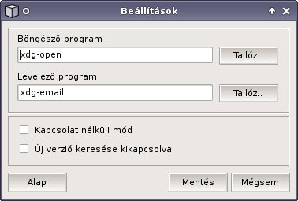

| Böngészõ program | böngészõ kiválasztása; hagyja üresen, ha az alapértelmezettet akarja használni |
| Levelezõ program | levelezõ kiválasztása; hagyja üresen, ha az alapértelmezettet akarja használni |
| Kapcsolat nélküli mód | a linkek, a frissítés és a frissítés keresés kikapcsolva |
| Új verzió keresése kikapcsolva | a frissítés keresés kikapcsolva |
| Alap | az alapértelmezett programok és az on-line mód beállítása |